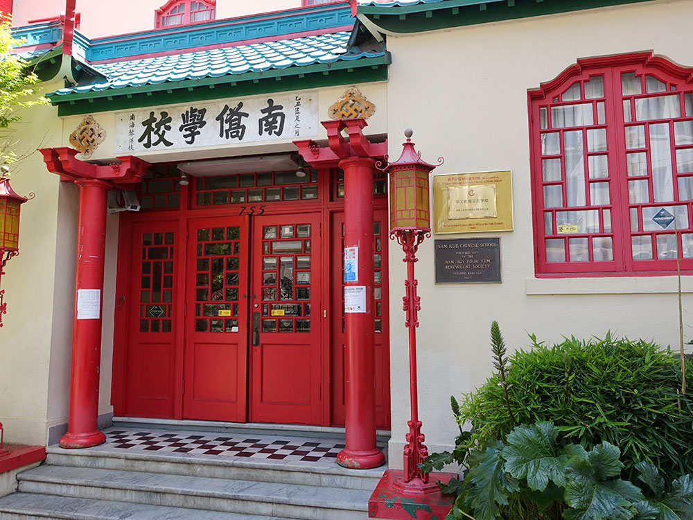
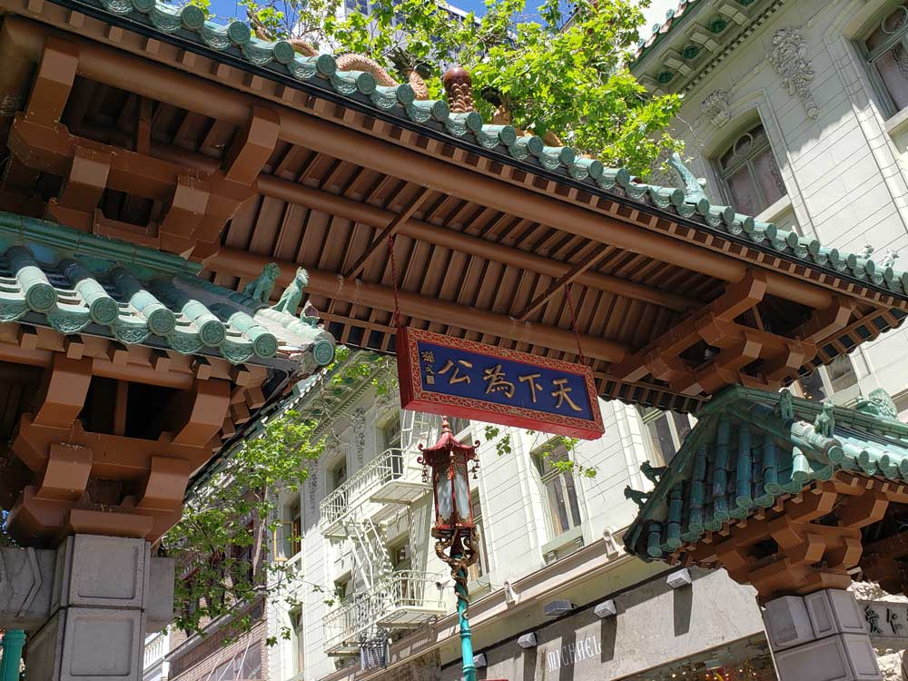
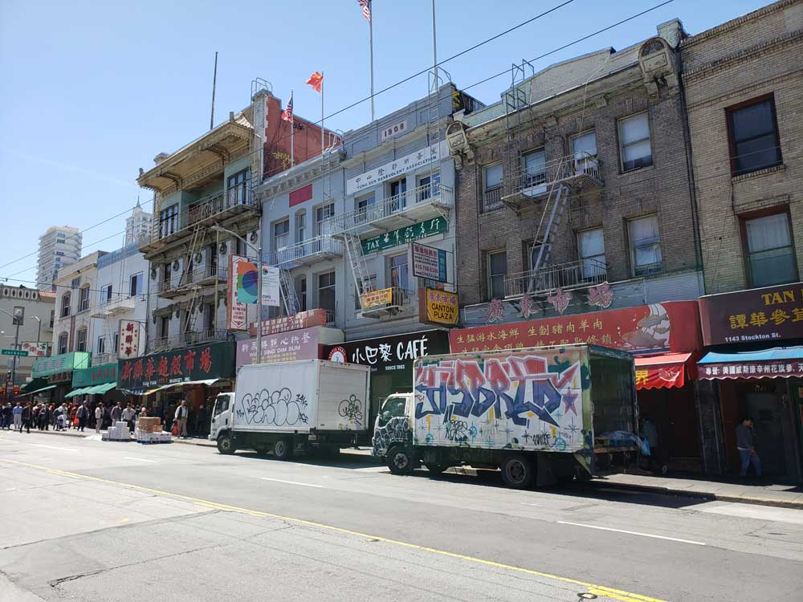
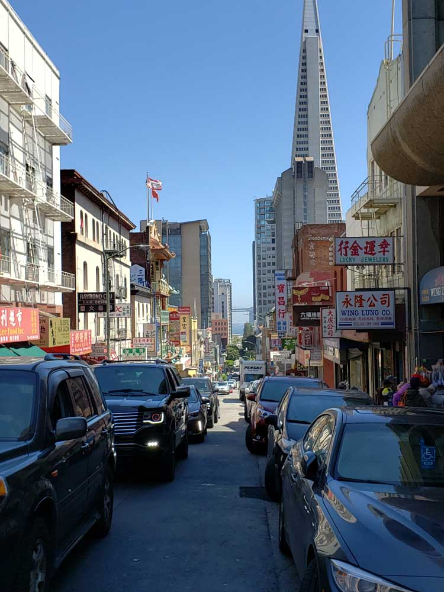
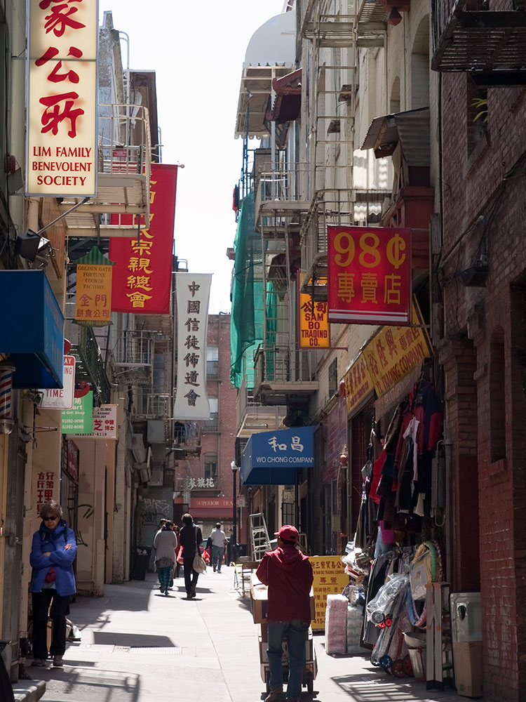
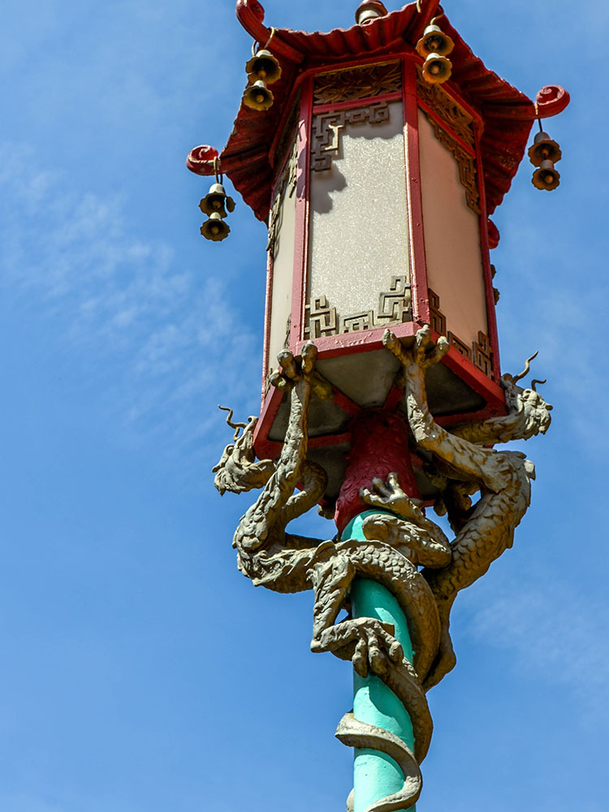
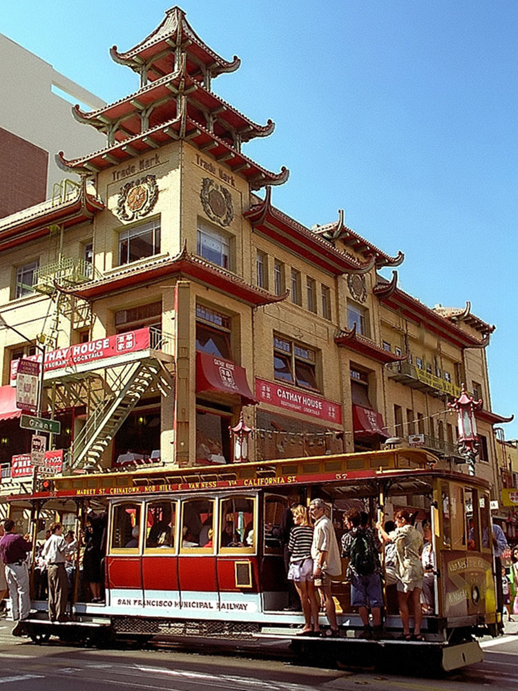
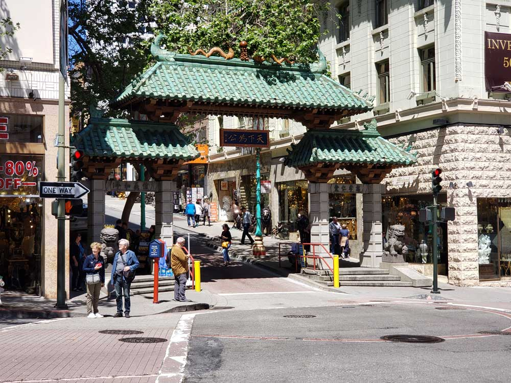

The oldest Chinatown in North America and the largest Chinese enclave outside Asia
How to Get There
Head south on S Van Ness Ave toward 12th St. Turn left onto 25th St. Turn left onto Balmy St.
Overview
The Chinatown centered on Grant Avenue and Stockton Street in San Francisco, California, is the oldest Chinatown in North America and the largest Chinese enclave outside Asia. It is also the oldest and largest of the four notable Chinese enclaves within San Francisco. Since its establishment in 1848, it has been highly important and influential in the history and culture of ethnic Chinese immigrants in North America. Chinatown is an enclave that continues to retain its own customs, languages, places of worship, social clubs, and identity. There are two hospitals, several parks and squares, numerous churches, a post office, and other infrastructure. San Francisco's Chinatown is also renowned as a major tourist attraction, drawing more visitors annually than the Golden Gate Bridge.
Stockton Street
Within Chinatown there are two major north-south thoroughfares. One is Grant Avenue, with the Dragon Gate ("Chinatown Gate" on some maps) at the intersection of Bush Street and Grant Avenue, designed by landscape architects Melvin Lee and Joseph Yee and architect Clayton Lee; Saint Mary's Square with a statue of Dr. Sun Yat-Sen by Benjamin Bufano; a war memorial to Chinese war veterans; and stores, restaurants and mini-malls that cater mainly to tourists. The other, Stockton Street, is frequented less often by tourists, and it presents an authentic Chinese look and feel reminiscent of Hong Kong, with its produce and fish markets, stores, and restaurants. It is dominated by mixed-use buildings that are three to four stories high, with shops on the ground floor and residential apartments upstairs.
A major focal point in Chinatown is Portsmouth Square. Since it is one of the few open spaces in Chinatown and sits above a large underground parking lot, Portsmouth Square bustles with activity such as T'ai Chi and old men playing Chinese chess. A replica of the Goddess of Democracy used in the Tiananmen Square protest was built in 1999 by Thomas Marsh and stands in the square. It is made of bronze and weighs approximately 600 lb (270 kg).
| No. | Name | Year | Address | Notability |
|---|---|---|---|---|
| 1. | Dragon Gate | 1970 | Grant at Bush | Southern entrance to Chinatown on Grant. One of the most photographed locations. |
| 2. | Saint Mary's Square | - | 651 California | Features statue of Dr. Sun Yat-sen, by Beniamino Bufano and a memorial for Chinese-American veterans of World Wars I and II. |
| 3. | Sing Chong building | 1907 | 601-615 Grant | Designed by Ross & Burgren and among the earliest buildings erected after the 1906 earthquake. Strong influence on Chinatown architecture. |
| 4. | Nam Kue Chinese School | 1925 | 755 Sacramento | Private school offering classes in Chinese culture, history, and language. |
| 5. | Portsmouth Square | 1800s | 733 Kearny | Oldest public space in San Francisco. |
| 6. | Chinese Telephone Exchange | 1909 | 743 Washington | All calls to Chinatown were routed by name and occupation until 1948. |
| 7. | Tin How Temple | 1910 | 125 Waverly | Oldest Taoist temple in Chinatown. |
| 8. | Ross Alley | 1849 | Between Jackson, Washington, Grant, and Stockton | Often used as a backdrop for films. |
| 9. | Golden Gate Fortune Cookie Company | 1962 | 56 Ross Alley | Working fortune cookie factory and shop. |
| 10. | Chinese Hospital | 1925 (demolished), 1977, 2017 | 845 Jackson | Only Chinese-language hospital in United States. |
| 11. | Chinese Historical Society of America | 1932 | 965 Clay | Former YWCA building designed by Julia Morgan. |
| 12. | Six Companies | c.1907 (remodeled 1950s) | 843 Stockton | Sometimes called the "White House" of Chinatown. |
San Francisco Chinatown restaurants are considered to be the birthplace of Americanized Chinese cuisine such as food items like Chop Suey while introducing and popularizing Dim Sum to American tastes, as its Dim Sum tea houses are a major tourist attraction. Johnny Kan was the proprietor of one of the first modern style Chinese restaurants, which opened in 1953. Many of the district's restaurants have been featured in food television programs on Chinese cuisine such as Martin Yan's Martin Yan - Quick & Easy.
Chinatown has served as a backdrop for several movies, television shows, plays and documentaries including The Maltese Falcon, What's Up, Doc?, Big Trouble in Little China, The Pursuit of Happyness, The Presidio, Flower Drum Song, The Dead Pool, and Godzilla.
Dragon Gate
The Dragon Gate is a south-facing gate at the intersection of Bush Street and Grant Avenue, marking a southern entrance to San Francisco's Chinatown, in the U.S. state of California. Built in 1969 as a gift from the Republic of China (Taiwan) in the style of a traditional Chinese pailou, it became one of the most photographed locations in Chinatown, along with the older Sing Fat and Sing Chong buildings (at Grant and California).
This article uses material from the Wikipedia article "Chinatown, San Francisco", and "Dragon Gate (San Francisco)",which is released under the Creative Commons Attribution-Share-Alike Li






.jpg){kind=link}

_-_Chinatown_(14682007311).jpg){kind=link}

.jpg){kind=link}
